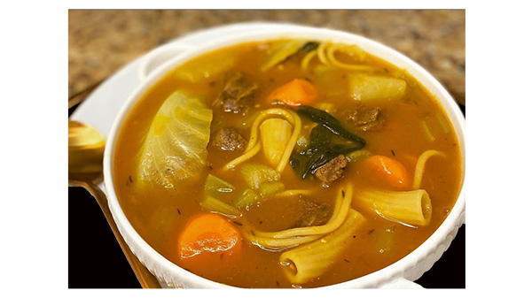

Pumpkin Soup (Soup Joumou)
Welcome to the Haitian tradition of having a bowl of pumpkin soup on New Years day. Enjoy starting you own tradition by following thi mouth watering recipe.
Ingridients
For the meat
- 1 Salt
- Black pepper
- Lime (the quantity depends on the amout of meat
- 6 cloves of garlic
- Parsley
For the soup
- ½ green cabbage sclide very thin
- 3 celery coarsely chopped
- 3 tunips sliced
- 1 large onion coarsely chopped
- 4 small green onion coarsely chopped
- 4 to 5 carrosts sliced
- 2 tbl spoon of butter
- 2 hands full of macaroni
- 2 hand full of spaghetti
The meat
- 2 beef shin
- 2 beef brisket